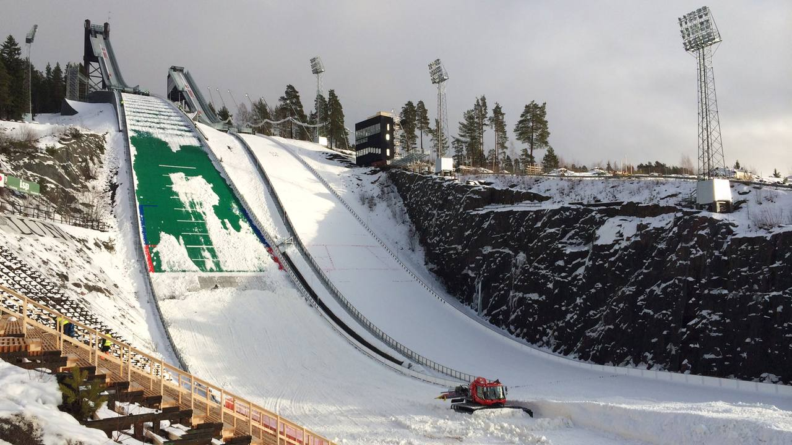
Life is more exciting here!
About Us
Falun is the seat of Falun Municipality and the capital of the Dalarna Region in Sweden. The municipality has about 60,000 inhabitants (SCB, 2025). The city is known for its rural landscapes, copper mining, long history, folk culture and sports events. The extraction of copper and gold can be traced back to the 1000s, with continuous extraction and on an industrial scale close to the 1300s by the company Stora Kopparberget, which is possibly the oldest still-existing enterprise in the world, proved active since 1347, when its charter was granted by King Magnus IV of Sweden. The first share in the company is dated as early as 1288.
History
- UNESCO World Heritage Site
- Stora Kopparberget Company
- Falun and World War II
- Dalregementet (the Dalarna Regiment)
- Gruvmuseet - the Mine Museum
- Great Copper Mountain - Kopparberget
- Traditional red paint - Falu rödfärg
- Traditional food - falukorv
Nature
- Hiking, biking or riding
- Fishing
- Camping
- Källviksbacken ski and snowboard
- Lake Runn - winter and summer
- Boat trip or snowmobile
- Lakes and nature reserves
- Naturkartan - trails and outdoor map of Falun
Events
- Midsommar (Midsummer)
- Åfesten - free city festival every June
- FIS Nordic World Ski Championships 2027 (24 February - 7 March)
- Cross-country skiing World Cup at Lugnet
- Falun Ski Jumping at Lugnet
- Valborg (Walpurgis Night)
- IBF Falun - Swedish floorball champions
- Sabaton Open Air - metal festival 2008-2022, on hiatus
Gallery
Spring
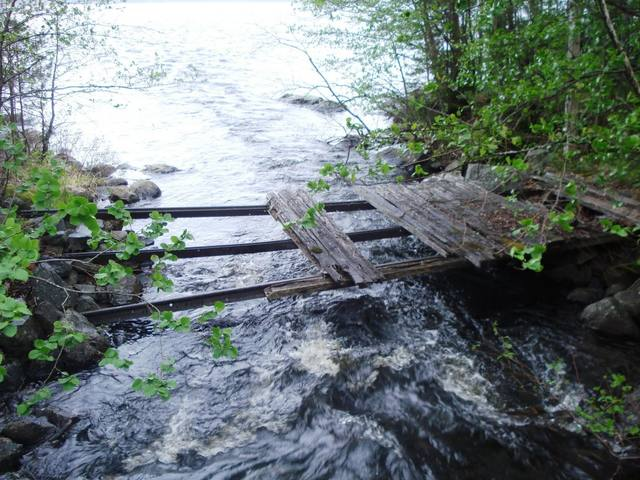
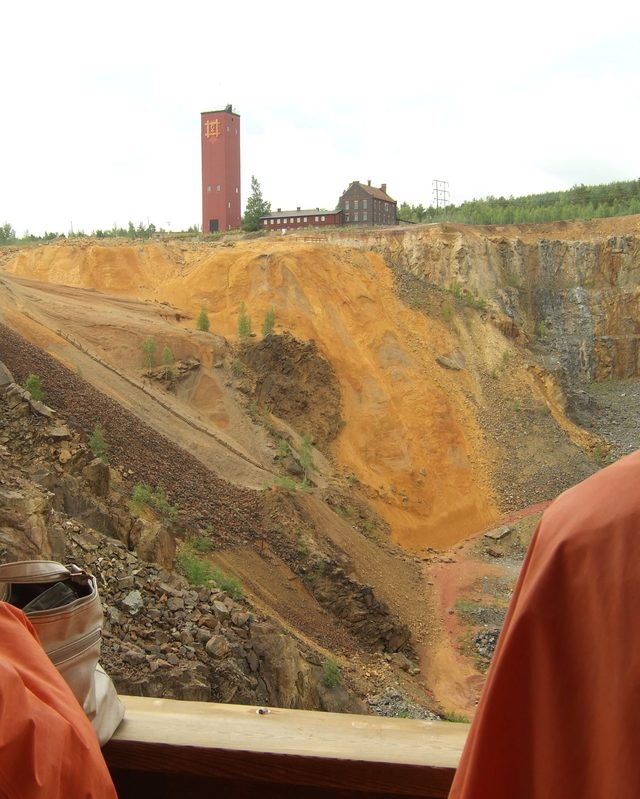
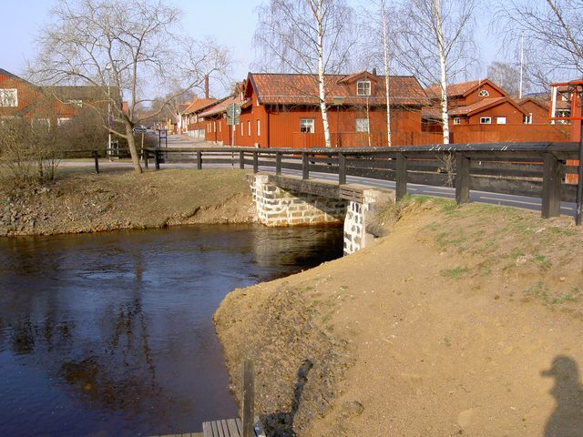
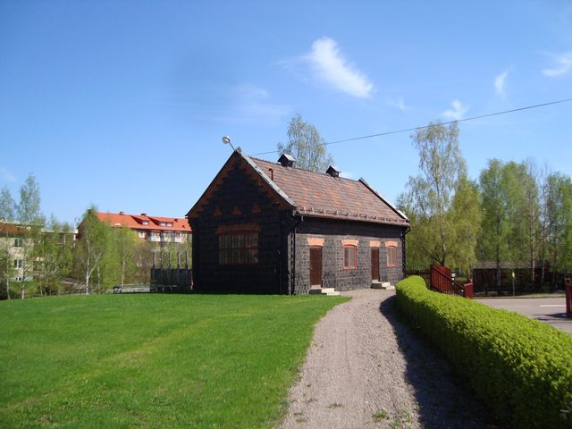
Summer
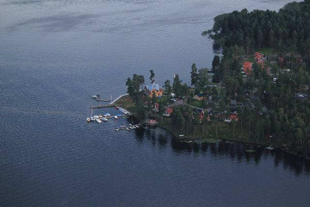
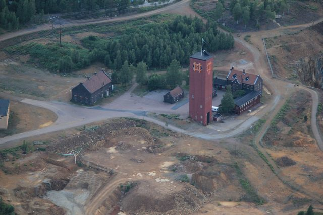
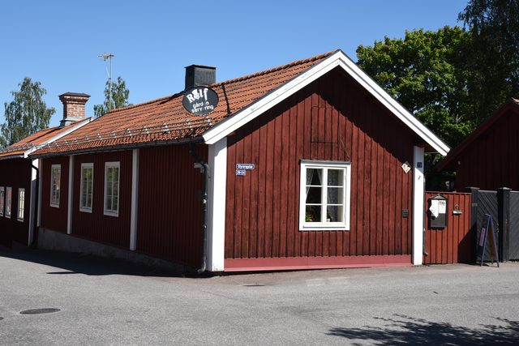
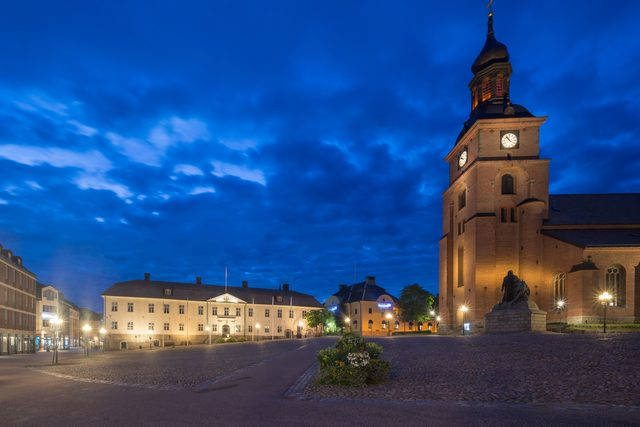
Autumn
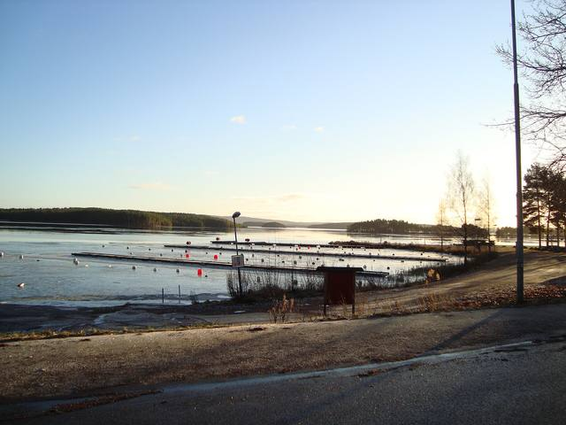
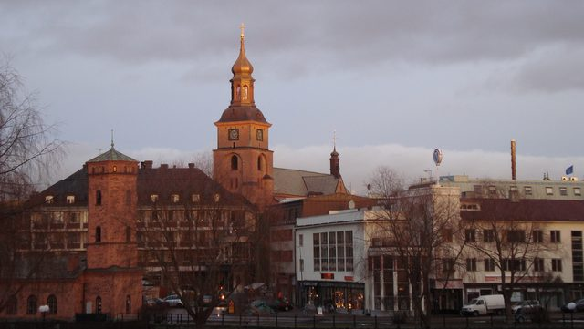
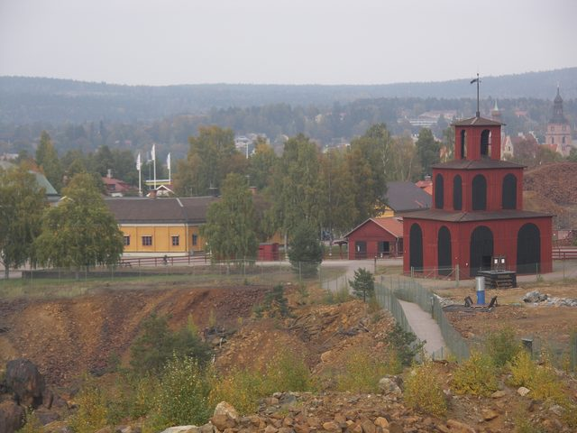
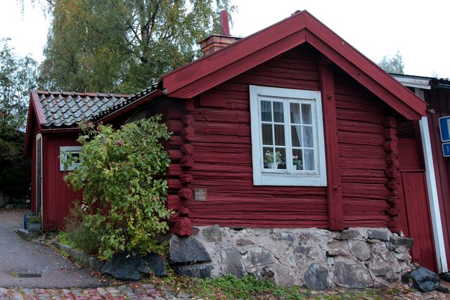
Winter
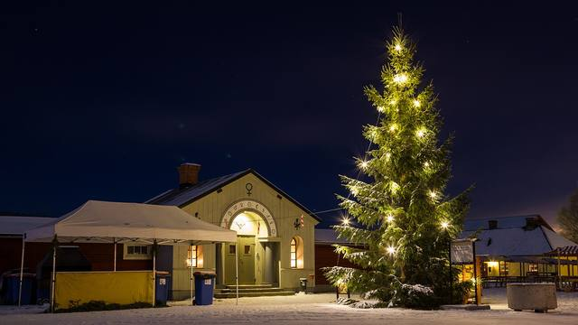
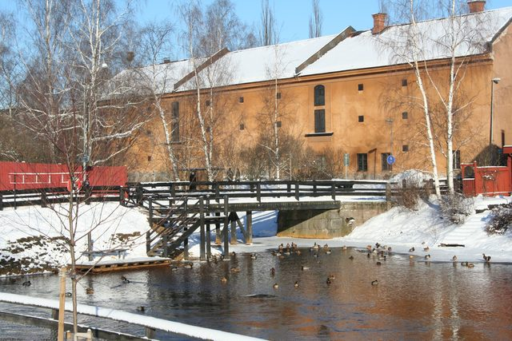
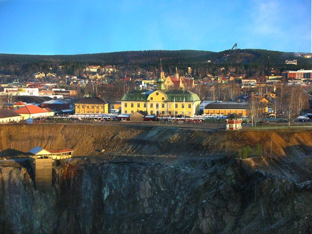
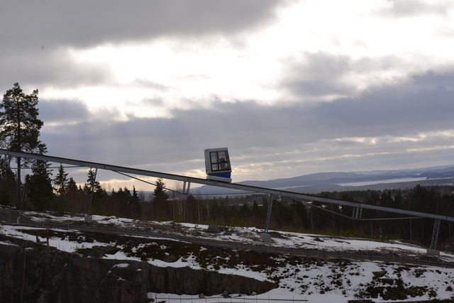
Sign Up
Demonstration only: this form does not send or store any data.
Thank you!
Your demo sign-up worked, and nothing was sent or stored. This site is an unofficial study project, so no real data is collected here.
Planning a real trip? Start at Visit Dalarna, the official tourism site for the region.